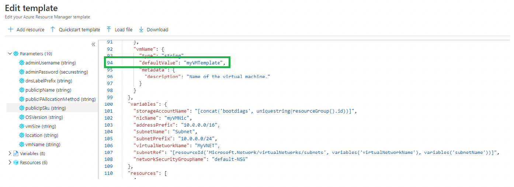
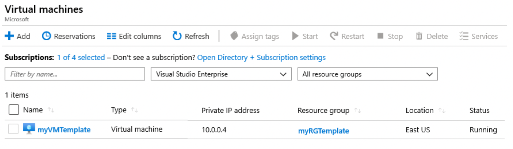
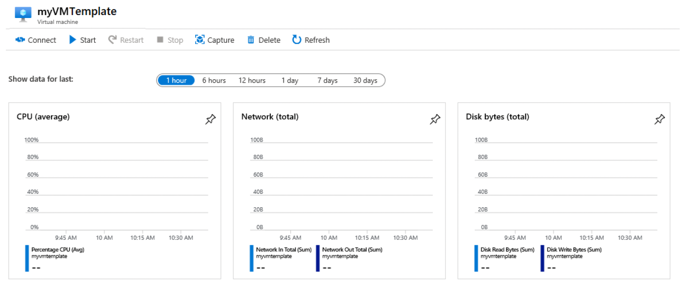
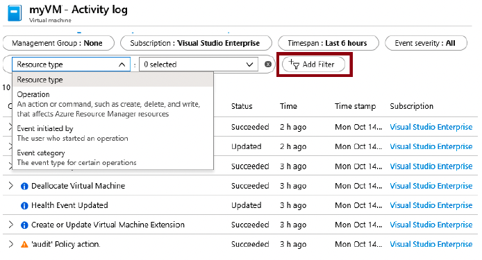

Lab 2: Create a VM with a Template (10 min)
In this Lab, we will deploy a virtual machine with a QuickStart template and examine monitoring capabilities.
Task 1: Explore the QuickStart gallery and locate a template
In this task, we will browse the Azure QuickStart gallery and deploy a template that creates a virtual machine.
1 - Within the lab environment, open a new browser window, and enter https://azure.microsoft.com/en-us/resources/templates/?azure-portal=true. In the gallery you will find a number of popular and recently updated templates. These templates automate deployment of Azure resources, including installation of popular software packages. Browse through the many different types of templates that are available.
2 - Select the Deploy a simple Windows VM.
3 - Click the Deploy to Azure button. Your browser session will be automatically redirected to the Azure portal.
Note: The Deploy to Azure button enables you to deploy the template via the Azure portal. During such deployment, you will be prompted only for a small set of configuration parameters.
4 - When prompted, sign into your Azure subscription using the credentials provided earlier in the instructions.
5 - Click Edit template. The Resource Manager template format uses the JSON format. Review the parameters and variables. Then locate the parameter for virtual machine name. Change the name to myVMTemplate. Save your changes.

6 - Now configure the parameters required by the template (replace xxxx in the DNS label prefix with letters and digits such that the label is globally unique). Leave the defaults for everything else.
| Setting | Value |
|---|---|
| Subscription | Keep default supplied |
| Resource group | Create new resource group |
| Region | Keep default |
| Admin username | azureuser |
| Admin password | Pa$$w0rd1234 |
| DNS label prefix | myvmtemplatexxxx |
| OS version | 2019-Datacenter |
7 - Click Review + Create.
8 - Monitor your deployment.
Task 2: Verify and monitor your virtual machine deployment
In this task, we will verify the virtual machine deployed correctly.
1 - From the All services blade, search for and select Virtual machines.
2 - Ensure your new virtual machine was created.

3 - Select your virtual machine and on the Overview pane, select the Monitoring tab, scroll down to view monitoring data.
Note: The monitoring time frame can be adjusted from one hour to 30 days.
4 - Review different charts that are provided including CPU (average), Network (total), and Disk bytes (total).

5 - Click on any chart. Note that you can Add metric and change the chart type.
6 - Return to the Overview blade. (slide toggle bar left)
7 - Click on the Activity log (left pane). Activity logs record such events as creation or modification of resources.
8 - Click Add Filter, and experiment with searching for different event types and operations.

Congratulations! You have successfully created a resource from a template and deployed that template to Azure.
Note: To avoid additional costs, you can optionally remove this resource group. Search for resource groups, click your resource group, and then click Delete resource group. Verify the name of the resource group and then click Delete. Monitor the Notifications to see how the delete is proceeding.